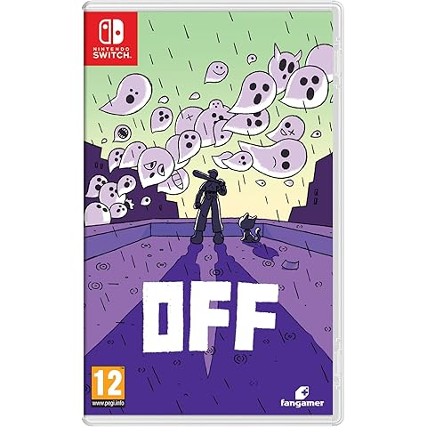

OFF es un juego de rol surrealista y atmosférico que se ha convertido en un título de culto por su estilo único y su narrativa enigmática. Controlas al Batter, un personaje misterioso cuya misión es “purificar” un mundo extraño dividido en zonas llenas de criaturas, espectros y personajes peculiares. Con un estilo visual minimalista, combates por turnos y una historia que juega con la psicología del jugador, OFF ofrece una experiencia inquietante, emocional y profundamente memorable. Ideal para quienes buscan algo diferente, oscuro y con un fuerte impacto narrativo.